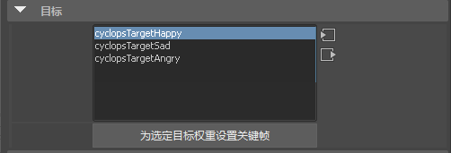
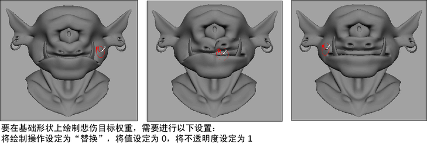
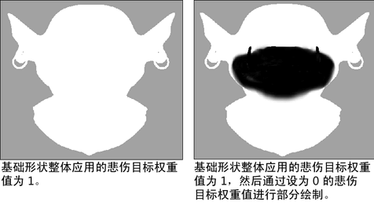
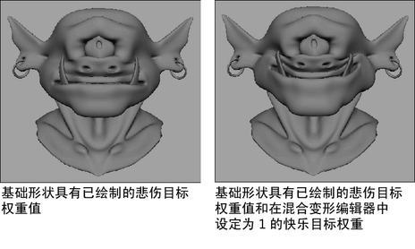

通过“绘制融合变形权重工具”(Paint Blend Shape Weights Tool)，可以使用 Maya® Artisan™ 笔刷在具有融合形变变形器（请参见创建融合形变变形器）的对象上绘制融合变形权重。
该工具可用于逐顶点设置融合变形权重，从而更精细地控制目标形状对基础形状所具有的影响量。使用该工具还可以为每个目标形状绘制权重，并且可以混合目标形状及创建部分目标。
也可以使用“镜像变形器权重选项”(Mirror Deformer Weights Options)来镜像融合形变变形器权重。请参见镜像变形器权重。
绘制融合变形权重时，还可以执行下列操作：
- 从绘制的基础形状创建新的目标形状。请参见从绘制的基础形状创建新的目标形状。
- 设置绘制的融合变形权重的关键帧，以便在目标形状与其基础形状之间创建动画过渡效果。请参见设置绘制的融合变形权重的动画。
- 导入或导出融合变形权重贴图。
使用融合变形权重贴图可以将属性值映射到相对于 UV 的基础形状曲面顶点上。借助导入的融合变形权重贴图，使用映射的值可将工具设置应用到基础形状顶点。为了产生很好的导入/导出结果，请确保基础形状具有很好的 UV。请参见导入融合变形权重贴图和导出融合变形权重贴图。
绘制融合变形权重
- 选择基础对象（应用了融合形变变形器的对象）。
- 打开形变编辑器。
- 在形变编辑器中，选择要绘制其权重的目标形状并将其权重滑块拖动到 1。
目标形状现在对基础对象的拓扑具有 100% 的影响。
- 选择“变形 > (绘制权重)融合变形”(Deform > (Paint Weights) Blend Shape) >
 。
。
“绘制融合变形权重工具”(Paint Blend Shape Weights Tool)设置将在“工具设置”(Tool Settings)编辑器中打开，并且中。请参见“绘制融合变形权重工具”设置。
- 在“笔刷”区域中，根据需要调整“不透明度”(Opacity)设置。
- 在“目标”(Target)区域中，从目标列表中选择要在基础形状上绘制其权重的目标形状。该目标形状与在形变编辑器中其权重设置为 1 的目标形状相同。

- 在“绘制权重”(Paint Weights)区域中，调整“明度值”(Value)和“绘制操作”(Paint Operation)工具设置，并在其基础形状上绘制选定目标的权重，以创建所需的变形。

默认情况下，会对基础形状整体应用“明度值”(Value) 1。
“明度值”(Value)为 1（完全影响）会显示为}白色绘制权重，而“明度值”(Value)为 0（没有影响）会显示为黑色绘制权重。所有其他“明度值”(Value)设置会显示为灰色的不同着色。
提示：在“绘制融合变形权重工具”(Paint Blend Shape Weights Tool)设置的“显示”(Display)区域中，禁用“颜色反馈”(Color Feedback)和“显示线框”(Show Wireframe)，以更好地看到绘制的融合变形权重在基础形状上的结果。
- 设置刚绘制的融合变形权重的关键帧，如下所述。
- 对其他目标形状重复执行这些步骤来创建其他变形效果。

设置绘制的融合变形权重的动画
- 执行下列操作之一：
- 在场景视图中，选择要设置其绘制的融合变形权重的关键帧的目标形状，然后选择“关键帧 > 设置融合变形目标权重关键帧”(Key > Set Blend Shape Target Weights Keys)。
该菜单项为选定目标形状设置绘制的融合变形权重的关键帧。
- 在“绘制融合变形权重工具”(Paint Blend Shape Weights Tool)设置中，从目标列表中选择要设置其绘制的融合变形权重的关键帧的目标形状，然后单击“为选定目标权重设置关键帧”(Key Selected Target Weights)按钮。
该按钮会为在目标列表中选定的目标形状设置绘制的融合变形权重的关键帧。
- 在场景视图中，选择要设置其绘制的融合变形权重的关键帧的目标形状，然后选择“关键帧 > 设置融合变形目标权重关键帧”(Key > Set Blend Shape Target Weights Keys)。
从绘制的基础形状创建新的目标形状
- 按上一过程中的步骤操作，直到已创建要另存为新目标形状的变形。
- 选择变形的基础形状，然后选择编辑 > 复制(Edit > Duplicate)。
变形的基础形状的副本会显示在基础形状上。
- 选择“移动工具”(Move Tool)，然后将变形的基础形状的副本从原始基础形状拖开。
- 使用当前目标形状的命名约定，重命名变形的基础形状的副本。
- 选择变形的基础形状的副本，然后按住 Shift 键并单击原始基础形状。
- 选择“变形 > (编辑)融合变形 > 添加”(Deform > (Edit) Blend Shape > Add) >
 以打开融合变形添加选项。
以打开融合变形添加选项。
会将创建的变形基础形状的副本作为新的目标形状添加到融合形变变形中。
导出融合变形权重贴图
- 在基础形状上绘制融合变形权重，直到获得希望导出为一个贴图的变形或外观为止。
- 选择绘制的基础形状。
- 在工具设置中，打开“属性贴图”(Attribute Maps)区域，然后打开“导出”(Export)区域。
- 设定“导出”(Export)设置，然后单击“导出”(Export)按钮。有关“导出”(Export)设置的描述，请参见“绘制融合变形权重工具”设置。
将显示“导出”(Export)浏览器窗口。
- 浏览到要将贴图保存到的位置，指定贴图的名称，然后单击“导出”(Export)。默认情况下，Maya 会将贴图放置在当前项目的 sourceimages 文件夹中。
会将基础形状的当前变形另存为一个属性贴图。
导入融合变形权重贴图
- 选择变形的基础形状。
- 在“绘制融合变形权重工具”(Paint Blend Shape Weights tool)设置中，打开“属性贴图”(Attribute Maps)区域，然后打开“导入”(Import)区域。
- 设定“导入”(Import)设置，然后单击“导入”(Import)按钮。有关“导入”(Import)设置的描述，请参见“绘制融合变形权重工具”设置。
将显示“导入”(Import)浏览器窗口。
- 浏览到要导入的贴图所在的位置，选择贴图文件，然后单击“导入”(Import)。
基础形状会根据导入的属性贴图指定的工具设置而变形。